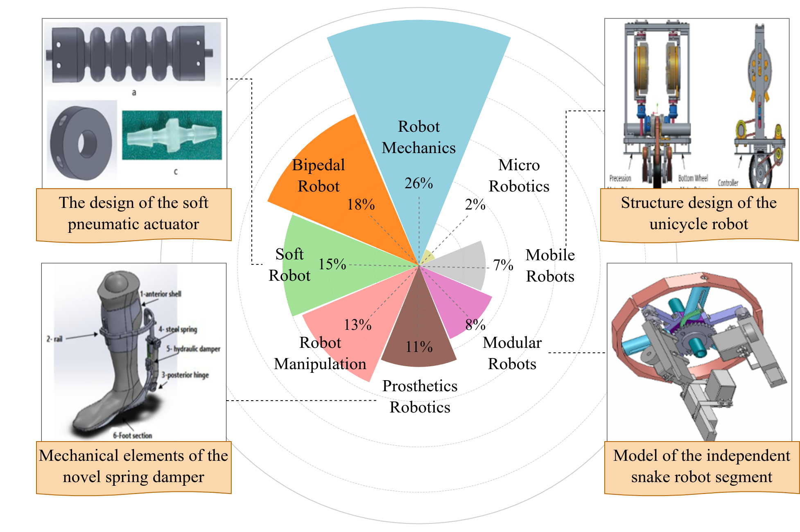

Introduction
Welcome to our project! We tackle the problem of robot design understanding.
Dataset Comparison

Grasp-Anything offers universality, featuring a wide range of everyday objects in natural arrangements, unlike other benchmarks limited by object selection and controlled settings.
Statistics


Grasp-Anything significantly outperforms other datasets in terms of number of samples and number of categories.
The POS tags in our dataset are visualized in the figure above, highlighting a diverse vocabulary in scene descriptions. By comparing the object shape distributions between Grasp-Anything and Jacquard dataset, Grasp-Anything covers a wider area, suggesting a higher level of shape diversity.

Stay Updated
This website will be continuously updated with the latest papers, datasets, and code. Please check back regularly for updates.